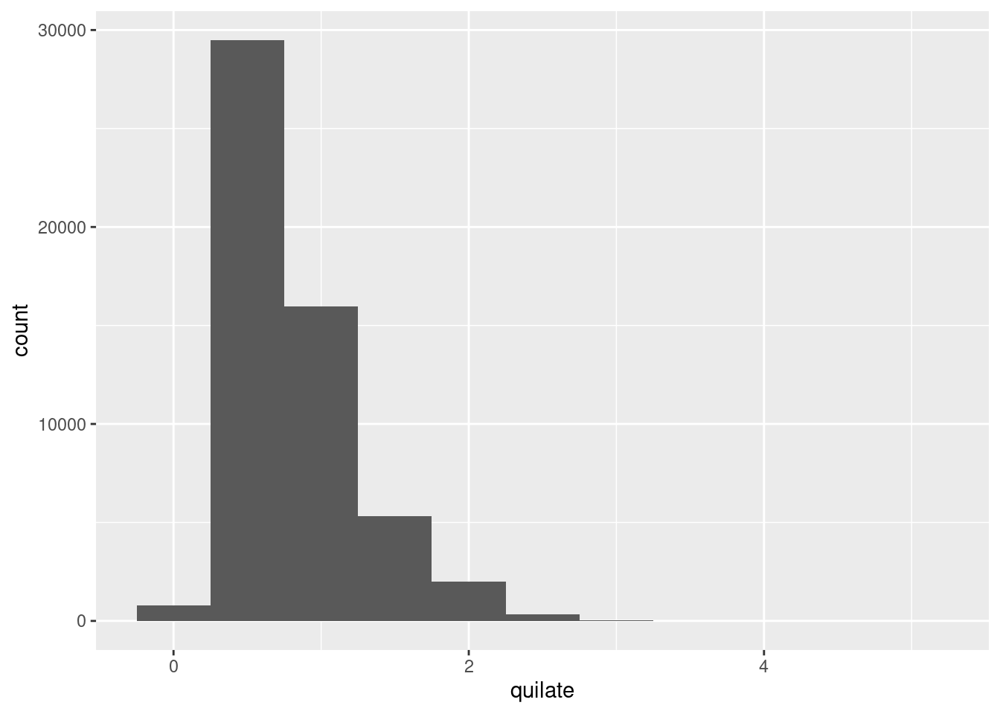
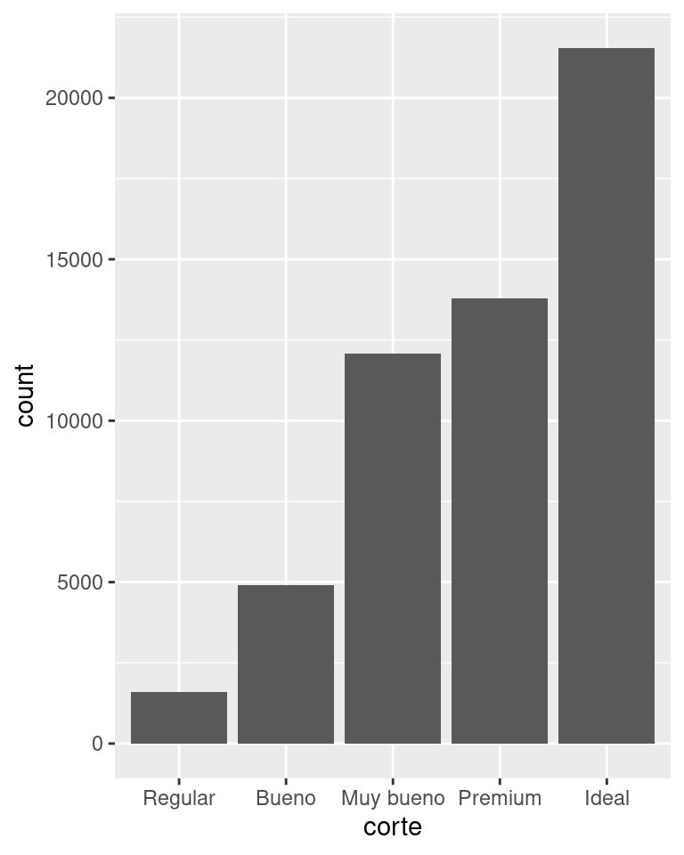
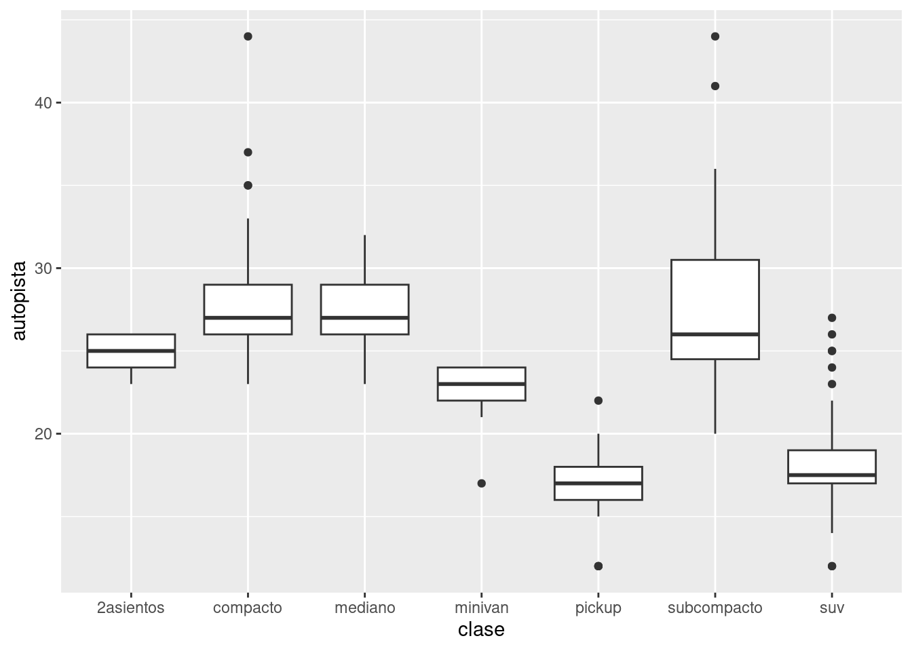
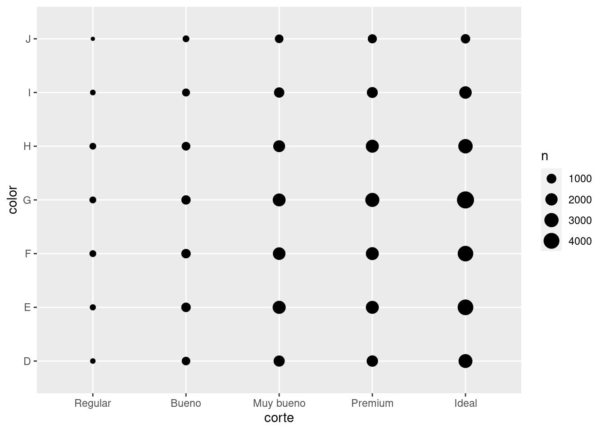
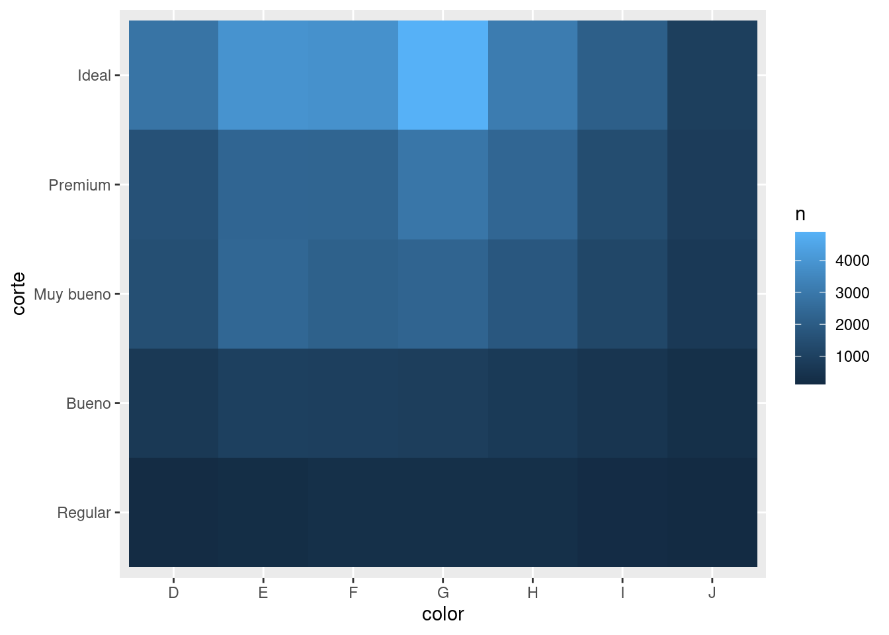
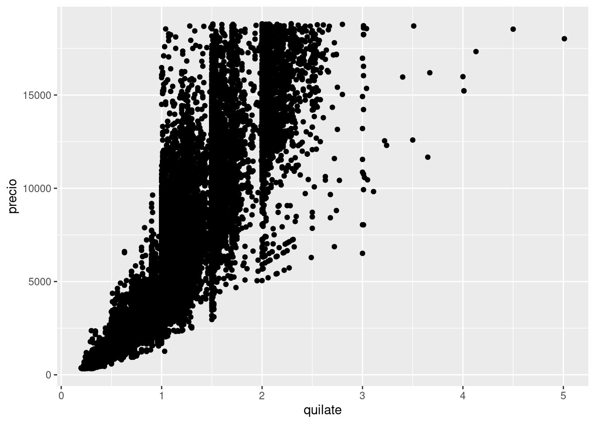
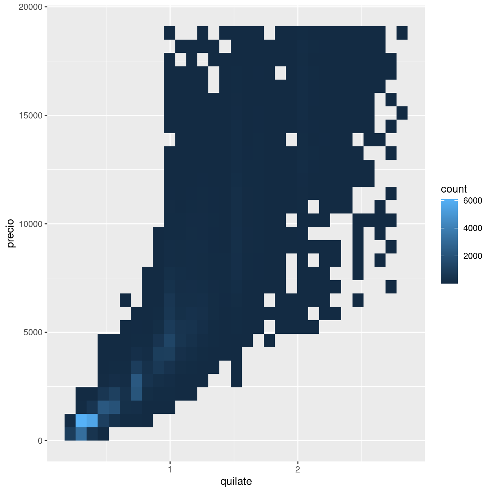
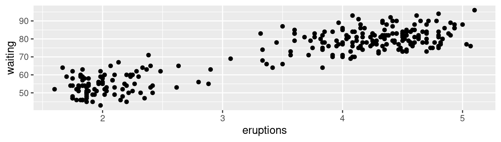

library(tidyverse)
library(datos)7 Análisis exploratorio de datos (EDA)
7.1 Introducción
Este capítulo te mostrará cómo usar la visualización y la transformación para explorar tus datos de manera sistemática, una tarea que las personas de Estadística suelen llamar análisis exploratorio de datos, o EDA (por sus siglas en inglés exploratory data analysis). El EDA es un ciclo iterativo en el que:
Generas preguntas acerca de tus datos.
Buscas respuestas visualizando, transformando y modelando tus datos.
Usas lo que has aprendido para refinar tus preguntas y/o generar nuevas interrogantes.
El análisis exploratorio de datos no es un proceso formal regido por un conjunto estricto de reglas. El EDA es, más que nada, un estado mental. Durante las fases iniciales del EDA deberías ser libre de investigar todas las ideas que se te ocurran. Algunas de estas ideas prosperarán, mientras que otras serán como callejones sin salida. A medida que tu exploración continúa, te concentrarás en ciertas áreas particularmente productivas sobre las que eventualmente escribirás y comunicarás a otras personas.
El EDA es una parte importante de cualquier análisis, aun si las preguntas están servidas en bandeja, pues siempre tendrás que examinar la calidad de tus datos. La limpieza de datos es una aplicación del EDA: haces preguntas acerca de si tus datos cumplen con tus expectativas o no. Para limpiar tus datos tendrás que desplegar todas las herramientas del EDA: visualización, transformación y modelado.
7.1.1 Requisitos indispensables
En este capítulo combinaremos lo que aprendiste sobre dplyr y ggplot2 para formular preguntas de manera interactiva, encontrar las respuestas en los datos, para luego plantear nuevas preguntas.
7.2 Preguntas
“No hay tal cosa como preguntas estadísticas rutinarias, solo rutinas estadísticas cuestionables.” — Sir David Cox
“Es preferible una respuesta aproximada a la pregunta correcta, que frecuentemente es formulada de manera imprecisa, que una respuesta exacta a la pregunta incorrecta, que siempre puede ser formulada de manera precisa.” — John Tukey
Tu objetivo durante el EDA es desarrollar un entendimiento de tus datos. La manera más fácil de lograrlo es usar preguntas como herramientas para guiar tu investigación. Cuando formulas una pregunta, esta orienta tu atención en una parte específica de tu conjunto de datos y te ayuda a decidir qué gráficos, modelos o transformaciones son necesarios.
El EDA es un proceso fundamentalmente creativo. Y como la mayoría de los procesos creativos, la clave para formular preguntas de calidad es generar una gran cantidad de preguntas. Es difícil hacer preguntas reveladoras al inicio de tu análisis pues aún no sabes qué percepciones o conocimientos están contenidos en tu conjunto de datos. Por otro lado, cada nueva pregunta que te plantees revelará un nuevo aspecto de tus datos y las probabilidades de hacer un descubrimiento serán mayores. Puedes profundizar en las partes más interesantes de tus datos—y desarrollar un conjunto de preguntas que estimularán tu pensamiento—si a cada pregunta le das seguimiento con un nuevo interrogante basado en tus descubrimientos.
No hay reglas específicas sobre qué preguntas deberías hacerte para guiar tu investigación. Sin embargo, hay dos tipos de preguntas que siempre te serán útiles para hacer descubrimientos dentro tus datos. Puedes formular dichas preguntas de la siguiente manera:
¿Qué tipo de variación existe dentro de cada una de mis variables?
¿Qué tipo de covariación ocurre entre mis diferentes variables?
El resto de este capítulo examinará las preguntas anteriores. Explicaremos qué es variación y covariación, y te mostraremos diferentes maneras de responder cada pregunta. Para facilitar esta discusión, definamos algunos términos:
Una variable es una cantidad, cualidad o característica mesurable, es decir, que se puede medir.
Un valor es el estado de la variable en el momento en que fue medida. El valor de una variable puede cambiar de una medición a otra.
Una observación es un conjunto de mediciones realizadas en condiciones similares (usualmente todas las mediciones de una observación son realizadas al mismo tiempo y sobre el mismo objeto). Una observación contiene muchos valores, cada uno asociado a una variable diferente. En algunas ocasiones nos referiremos
a una observación como un punto específico (data point en inglés).Los datos tabulares (tabular data en inglés) son un conjunto de valores, cada uno asociado a una variable y a una observación. Los datos tabulares están ordenados si cada valor está almacenado en su propia “celda”, cada variable cuenta con su propia columna, y cada observación corresponde a una fila.
Todos los datos que has visto hasta ahora han estado ordenados. En la vida real, la mayor parte de los datos no lo están, así que retomaremos estas ideas de nuevo en [datos ordenados].
7.3 Variación
La variación es la tendencia de los valores de una variable a cambiar de una medición a otra. Es fácil observar dicha variación en la vida real; si mides cualquier variable continua dos veces obtendrás diferentes resultados. Esto es verdad aun si mides cantidades que son constantes, como la velocidad de la luz. Cada una de tus mediciones incluirá una cantidad pequeña de error que variará de medición a medición. Las variables categóricas también pueden variar si realizas mediciones con diferentes sujetos (p. ej., el color de ojos de diferentes personas) o en momentos diferentes (p.ej., los niveles de energía que un electrón posee en momentos distintos). La variación de cada variable sigue un patrón específico y este puede revelar información interesante. La mejor manera de entender dicho patrón es visualizando la distribución de los valores de la variable.
7.3.1 Visualizando distribuciones
Cómo visualizar la distribución de una variable dependerá de si la variable es categórica o continua. Una variable es categórica si únicamente puede adoptar un valor correspondiente a un grupo limitado de valores. En R las variables categóricas usualmente son guardadas como vectores de factores o de caracteres. Para examinar la distribución de una variable categórica, usa un gráfico de barras:
ggplot(data = diamantes) +
geom_bar(mapping = aes(x = corte))
La altura de las barras muestra cuántas observaciones corresponden a cada valor de x. Puedes calcular estos valores con dplyr::count():
diamantes %>%
count(corte)# A tibble: 5 × 2
corte n
<ord> <int>
1 Regular 1610
2 Bueno 4906
3 Muy bueno 12082
4 Premium 13791
5 Ideal 21551Una variable es continua si puede adoptar un set infinito de valores ordenados. Los números y fechas-horas son dos ejemplos de variables continuas. Para examinar la distribución de una variable continua, usa un histograma:
ggplot(data = diamantes) +
geom_histogram(mapping = aes(x = quilate), binwidth = 0.5)
Puedes calcular esto manualmente combinando dplyr::count() y ggplot2::cut_width():
diamantes %>%
count(cut_width(quilate, 0.5))# A tibble: 11 × 2
`cut_width(quilate, 0.5)` n
<fct> <int>
1 [-0.25,0.25] 785
2 (0.25,0.75] 29498
3 (0.75,1.25] 15977
4 (1.25,1.75] 5313
5 (1.75,2.25] 2002
6 (2.25,2.75] 322
7 (2.75,3.25] 32
8 (3.25,3.75] 5
9 (3.75,4.25] 4
10 (4.25,4.75] 1
11 (4.75,5.25] 1Un histograma segmenta el eje horizontal en rangos equidistantes y después hace uso de la altura de la barra para mostrar el número de observaciones que corresponden a cada unidad o barra. En el gráfico anterior, la barra más alta muestra que al menos 30,000 observaciones tienen un valor de quilate entre 0.25 y 0.75, que son los bordes izquierdo y derecho de la barra.
Puedes definir el ancho de los intervalos de un histograma con el argumento binwidth (ancho del contenedor en inglés), que es medido en las unidades de la variable x. Siempre deberías explorar una variedad de distintas medidas para el ancho del intervalo cuando estés trabajando con histogramas, pues distintas medidas pueden revelar diferentes patrones. Por ejemplo, así es como luce la gráfica anterior cuando acercamos la imagen a solo los diamantes con un tamaño menor a tres quilates y escogemos un intervalo más pequeño.
pequenos <- diamantes %>%
filter(quilate < 3)
ggplot(data = pequenos, mapping = aes(x = quilate)) +
geom_histogram(binwidth = 0.1)Si deseas sobreponer múltiples histogramas en la misma gráfica, te recomendamos usar geom_freqpoly() (polígonos de frecuencia) en lugar de geom_histogram(). geom_freqpoly() realiza el mismo cálculo que geom_histogram(), pero usa líneas en lugar de barras para mostrar los totales. Es mucho más fácil entender líneas que barras que se sobreponen.
ggplot(data = pequenos, mapping = aes(x = quilate, colour = corte)) +
geom_freqpoly(binwidth = 0.1)Hay ciertas limitantes con este tipo de gráfico, pero volveremos a ellas en la sección sobre visualizar una variable categórica y una variable continua.
Ahora que puedes visualizar la variación en los datos, ¿qué deberías buscar en tus gráficos? ¿Y qué tipo de preguntas de seguimiento deberías hacerte? Hemos generado una lista de los tipos más útiles de información que puedes encontrar en tus gráficos, además de algunas preguntas de seguimiento para cada tipo de información. La clave para hacer buenas preguntas será confiar en tu curiosidad (¿sobre qué quieres aprender más?), así como en tu escepticismo (¿de qué manera podría ser esto engañoso?).
7.3.2 Valores típicos
Tanto en gráficos de barra como en histogramas, las barras altas muestran los valores más comunes de una variable y las barras más cortas muestran valores menos comunes. Espacios que no tienen barras revelan valores que no fueron observados en tus datos. Para convertir esta información en preguntas útiles, busca cosas que sean inesperadas:
¿Qué valores son los más comunes? ¿Por qué?
¿Qué valores son infrecuentes? ¿Por qué? ¿Cumple esto tus expectativas?
¿Puedes ver patrones inusuales? ¿Qué podría explicarlos?
Por ejemplo, el siguiente histograma sugiere varias preguntas interesantes:
¿Por qué hay más diamantes en quilates completos y fracciones comunes de quilates?
¿Por qué hay más diamantes hacia la derecha de cada sección que
hacia la izquierda?¿Por qué no hay diamantes más grandes que 3 quilates?
ggplot(data = pequenos, mapping = aes(x = quilate)) +
geom_histogram(binwidth = 0.01)Las agrupaciones de valores similares sugieren que ciertos subgrupos existen en tus datos. Para entender un poco mejor los subgrupos, pregúntate lo siguiente:
¿De qué manera son similares entre sí las observaciones dentro de cada grupo?
¿De qué manera son diferentes las observaciones que corresponden a grupos diferentes?
¿Cómo puedes explicar o definir los grupos?
¿Por qué puede ser engañosa la apariencia de los grupos?
El siguiente histograma muestra la duración (en minutos) de 272 erupciones del géiser Viejo Fiel (Old Faithful) en el Parque Nacional Yellowstone. La duración de las erupciones parece estar agrupada en dos conjuntos: erupciones cortas (con duración de alrededor de dos minutos) y erupciones largas (4-5 minutos), y pocos datos en el intervalo intermedio.
ggplot(data = fiel, mapping = aes(x = erupciones)) +
geom_histogram(binwidth = 0.25)Muchas de las preguntas anteriores te ayudarán a explorar la relación entre variables, por ejemplo, para ver si los valores de una variable pueden explicar el comportamiento de otra variable. Pronto llegaremos a ese punto.
7.3.3 Valores inusuales
Los valores atípicos, conocidos en inglés como outliers, son puntos en los datos que parecen no ajustarse al patrón. Algunas veces dichos valores atípicos son errores cometidos durante la ingesta de datos; otras veces sugieren nueva información. Cuando tienes una gran cantidad de datos, es difícil identificar los valores atípicos en un histograma. Por ejemplo, toma la distribución de la variable y del set de datos de diamantes. La única evidencia de la existencia de valores atípicos son límites inusualmente anchos en el eje horizontal.
ggplot(diamantes) +
geom_histogram(mapping = aes(x = y), binwidth = 0.5)
Hay tantas observaciones en las barras comunes que las barras infrecuentes son tan cortas que no es posible verlas a simple vista (aunque quizá si observas con mucha atención el 0 podrías encontrar algo). Para facilitar la tarea de visualizar valores inusuales, necesitamos acercar la imagen a los valores más pequeños del eje vertical con coord_cartesian():
ggplot(diamantes) +
geom_histogram(mapping = aes(x = y), binwidth = 0.5) +
coord_cartesian(ylim = c(0, 50))(coord_cartesian() también tiene un argumento xlim() para cuando es necesario acercar la imagen sobre el eje horizontal. ggplot2 también tiene funciones xlim() e ylim() que funcionan de una manera distinta: ignoran los datos que se encuentran fuera de los límites.)
Esto nos permite ver que hay tres valores inusuales: 0, ~30, y ~60. Podemos removerlos con dplyr:
inusual <- diamantes %>%
filter(y < 3 | y > 20) %>%
select(precio, x, y, z) %>%
arrange(y)
inusual# A tibble: 9 × 4
precio x y z
<int> <dbl> <dbl> <dbl>
1 5139 0 0 0
2 6381 0 0 0
3 12800 0 0 0
4 15686 0 0 0
5 18034 0 0 0
6 2130 0 0 0
7 2130 0 0 0
8 2075 5.15 31.8 5.12
9 12210 8.09 58.9 8.06La variable y mide una de las tres dimensiones de estos diamantes en mm (milímetros). Sabemos que los diamantes no pueden tener una anchura de 0mm, así que estos valores deben ser incorrectos. También podríamos sospechar que las medidas de 32mm y 59mm son improbables: esos diamantes medirían más de una pulgada de largo, ¡pero no cuestan cientos de miles de dólares!
Es un buen hábito repetir tu análisis con y sin los valores inusuales. Si tienen un efecto mínimo en los resultados y no puedes descubrir por qué están en los datos, es razonable reemplazarlos con valores ausentes y seguir adelante con tu análisis. Sin embargo, si tienen un efecto sustancial en tus resultados, no deberías ignorarlos sin justificación. Deberás descubrir qué los causó (p.ej., un error en la entrada de datos) y explicitar que los removiste en tu reporte escrito.
7.3.4 Ejercicios
Explora la distribución de cada una de las variables
x,y, yz
en el set de datosdiamantes. ¿Qué aprendiste? Piensa en un diamante y cómo decidirías qué dimensiones corresponden a la longitud, ancho y profundidad.Explora la distribución de
precio. ¿Ves algo inusual o sorprendente? (Sugerencia: Piensa detenidamente enbinwidthy asegúrate de usar un rango largo de valores.)¿Cuántos diamantes tienen 0.99 quilates? ¿Cuántos son de 1 quilate? ¿Qué piensas que puede ser la causa de dicha diferencia?
Compara y contrasta
coord_cartesian()contraxlim()oylim()en cuanto a acercar la imagen en un histograma. ¿Qué pasa si no modificas el valor debinwidth? ¿Qué pasa si intentas acercar la imagen de manera que solo aparezca la mitad de una barra?
7.4 Valores faltantes
Si has encontrado valores inusuales en tu set de datos y simplemente quieres seguir con el resto de tu análisis, tienes dos opciones.
Desecha la fila completa donde están los valores inusuales:
diamantes2 <- diamantes %>% filter(between(y, 3, 20))No recomiendo esta opción porque el hecho de que una medida sea inválida no significa que todas las mediciones lo sean. Además, si la calidad de tus datos es baja, después de aplicar esta estrategia en todas tus variables ¡quizás te des cuenta que ya no tienes datos con los que trabajar!
En lugar de eso, recomiendo reemplazar los valores inusuales con valores faltantes. La manera más fácil de hacerlo es usar
mutate()para reemplazar la variable con una copia editada de la misma. Puedes usar la funciónifelse()para reemplazar valores inusuales conNA:diamantes2 <- diamantes %>% mutate(y = ifelse(y < 3 | y > 20, NA, y))
ifelse() tiene tres argumentos. El primer argumento test debe ser un vector lógico. El resultado contendrá el valor del segundo argumento, sí, cuando test sea VERDADERO, y el valor del tercer argumento, no, cuando sea falso. Como alternativa a ifelse, usa dplyr::case_when() (caso cuando). case_when() es particularmente útil dentro de mutate cuando quieras crear una nueva variable que dependa de una combinación compleja de variables existentes.
Como R, ggplot2 suscribe la filosofía de que los valores faltantes nunca deberían desaparecer silenciosamente. La cuestión de dónde graficar los valores faltantes no es trivial, así que ggplot2 no los incluye en los gráficos, pero emite una advertencia acerca de que fueron removidos:
ggplot(data = diamantes2, mapping = aes(x = x, y = y)) +
geom_point()Warning: Removed 9 rows containing missing values (`geom_point()`).
Para eliminar esa alerta, define na.rm = TRUE:
ggplot(data = diamantes2, mapping = aes(x = x, y = y)) +
geom_point(na.rm = TRUE)En otras ocasiones querrás entender qué diferencias hay entre las observaciones con valores faltantes y las observaciones con valores registrados. Por ejemplo, en datos::vuelos los valores faltantes en la variable horario_salida indicaban que el vuelo había sido cancelado, por lo que uno querría comparar el horario de salida programado para los vuelos cancelados y los no cancelados. Puedes hacer esto creando una nueva variable con is.na().
datos::vuelos %>%
mutate(
cancelados = is.na(horario_salida),
hora_programada = salida_programada %/% 100,
minuto_programado = salida_programada %% 100,
salida_programada = hora_programada + minuto_programado / 60
) %>%
ggplot(mapping = aes(salida_programada)) +
geom_freqpoly(mapping = aes(colour = cancelados), binwidth = 1/4)Sin embargo, este gráfico no es tan bueno porque hay muchos más vuelos no cancelados que vuelos cancelados. En la siguiente sección exploraremos algunas de las técnicas para mejorar esta comparación.
7.4.1 Ejercicios
¿Qué sucede con los valores faltantes en un histograma? ¿Qué pasa con los valores faltantes en una gráfica de barras? ¿Cuál es la razón detrás de esta diferencia?
¿Qué efecto tiene usar
na.rm = TRUEenmean()(media) ysum()(suma)?
7.5 Covariación
Si la variación describe el comportamiento dentro de una variable, la covariación describe el comportamiento entre variables. La covariación es la tendencia de los valores de dos o más variables a variar simultáneamente de una manera relacionada La mejor manera de reconocer que existe covariación en tus datos es visualizar la relación entre dos o más variables. Cómo hacerlo dependerá de los tipos de variables involucradas.
7.5.1 Una variable categórica y una variable continua
Es común querer explorar la distribución de una variable continua agrupada por una variable categórica, como lo hicimos en el polígono de frecuencia anterior. La apariencia automática de geom_freqpoly() no es tan útil para este tipo de comparación, pues la altura está dada por la cuenta total. Eso significa que si uno de los grupos es mucho más pequeño que los demás, será difícil ver las diferencias en altura. Por ejemplo, exploremos cómo varía el precio dependiendo de la calidad de un diamante:
ggplot(data = diamantes, mapping = aes(x = precio)) +
geom_freqpoly(mapping = aes(colour = corte), binwidth = 500)Resulta difícil observar las diferencias de las distribuciones porque las cuentas totales difieren en gran medida:
ggplot(diamantes) +
geom_bar(mapping = aes(x = corte))
Para facilitar esta comparación necesitamos cambiar lo que se muestra en el eje vertical. En lugar de mostrar la cuenta total, mostraremos la densidad, que es lo mismo que la cuenta estandarizada de manera que el área bajo cada polígono es igual a uno.
ggplot(data = diamantes, mapping = aes(x = precio, y = ..density..)) +
geom_freqpoly(mapping = aes(colour = corte), binwidth = 500)Warning: The dot-dot notation (`..density..`) was deprecated in ggplot2 3.4.0.
ℹ Please use `after_stat(density)` instead.En este gráfico hay algo un tanto sorprendente: ¡parece que los diamantes regulares (la calidad más baja) tienen, en promedio, el precio más alto! Pero quizá eso sea porque los polígonos de frecuencia son difíciles de interpretar; hay mucho que decir sobre lo que este gráfico muestra.
Otra alternativa para mostrar la distribución de una variable continua agrupada en relación con otra variable categórica es el diagrama de caja (boxplot en inglés). Un diagrama de caja es un tipo de representación visual para la distribución de valores que es popular entre las personas que se dedican a la estadística. Cada diagrama de caja está integrado por:
Una caja que comprende desde el percentil 25 de la distribución hasta el percentil 75, distancia que se conoce como rango intercuartil ( interquartile range o IQR en inglés). En el centro de la caja se encuentra una línea que señala la mediana (es decir, el percentil 50), de la distribución. Estas tres líneas te darán una idea sobre la dispersión de la distribución, así como también te mostrarán si la distribución es simétrica en torno a la mediana o si está sesgada hacia uno de los lados.
Los puntos que representan observaciones que se encuentran a más de 1.5 veces el IQR a partir de cualquier borde de la caja. Estos puntos son inusuales en los datos, de manera que son graficados individualmente.
Una línea (o bigote) que se extiende a partir de cada borde de la caja hasta el punto más lejano de la distribución que no sea considerado como un valor atípico.

Veamos la distribución de la variable precio en relación con el corte usando geom_boxplot():
ggplot(data = diamantes, mapping = aes(x = corte, y = precio)) +
geom_boxplot()Si bien vemos mucha menos información sobre la distribución, los diagramas de caja son más compactos, lo que hace que sea más fácil compararlos (y presentar más en un mismo gráfico). Esto respalda el contradictorio resultado al que llegamos antes sobre que los diamantes de mayor calidad son en promedio más baratos. En los ejercicios tendrás que descubrir por qué.
corte es un factor ordenado: regular es peor que bueno, que a su vez es peor que muy bueno y así sucesivamente. Muchas variables categóricas no tienen un orden intrínseco como tal, de manera que puedes reordenarlas para mostrarlas de manera más informativa. Una manera de hacerlo es usar la función reorder() (reordenar).
Por ejemplo, el caso de la variable clase del set de datos millas. Podría interesarte saber cómo varía el rendimiento en autopista según la clase del vehículo:
ggplot(data = millas, mapping = aes(x = clase, y = autopista)) +
geom_boxplot()
Para hacer que la tendencia sea más fácil de ver, podemos reordenar la variable clase respecto a la mediana de la variable autopista:
ggplot(data = millas) +
geom_boxplot(mapping = aes(x = reorder(clase, autopista, FUN = median), y = autopista))Si los nombres de tus variables son muy largos, geom_boxplot() funcionará mejor si giras el gráfico en 90°. Puedes hacer esto agregando coord_flip() (voltear coordenadas).
ggplot(data = millas) +
geom_boxplot(mapping = aes(x = reorder(clase, autopista, FUN = median), y = autopista)) +
coord_flip()7.5.1.1 Ejercicios
Usa lo que has aprendido para mejorar la visualización de los tiempos de salida de los vuelos cancelados versus los no cancelados.
¿Qué variable del conjunto de datos de diamantes es más importante para predecir el precio de un diamante? ¿Cómo está correlacionada esta variable con el corte? ¿Por qué la combinación de estas dos relaciones conlleva que los diamantes de menor calidad sean más costosos?
Intercambia las variables x e y en un diagrama de caja vertical y crear un diagrama de cajas horizontal. ¿Cómo se compara esto a usar
coord_flip()?Un problema con los diagramas de caja es que fueron desarrollados en un tiempo en que los set de datos eran más pequeños y por ende tienden a mostrar un número muy grande de “valores atípicos”. Una estrategia para remediar este problema es el diagrama letter value. Instala el paquete lvplot, e intenta usar
geom_lv()para mostrar la distribución de precio vs corte. ¿Qué observas? ¿Cómo interpretas los gráficos?Compara y contrasta
geom_violin()con ungeom_histogram()dividido en facetas, o ungeom_freqpoly()codificado por colores. ¿Cuáles son las ventajas y desventajas de cada método?Si tu set de datos es pequeño, a veces resulta útil usar
geom_jitter()para ver la relación entre una variable continua y una categórica El paquete ggbeeswarm provee de un número de métodos similares ageom_jitter(). Enlístalos y describe brevemente qué hace cada uno.
7.5.2 Dos variables categóricas
Para visualizar la variación entre variables categóricas, deberás contar el número de observaciones de cada combinación. Una manera de hacerlo es empleando la función integrada geom_count() (del inglés contar):
ggplot(data = diamantes) +
geom_count(mapping = aes(x = corte, y = color))
El tamaño de cada círculo en la gráfica muestra cuántas observaciones corresponden a cada combinación de valores. La covariación lucirá como una correlación fuerte entre valores específicos de x y y.
Otra estrategia es calcular el recuento con dplyr:
diamantes %>%
count(color, corte)# A tibble: 35 × 3
color corte n
<ord> <ord> <int>
1 D Regular 163
2 D Bueno 662
3 D Muy bueno 1513
4 D Premium 1603
5 D Ideal 2834
6 E Regular 224
7 E Bueno 933
8 E Muy bueno 2400
9 E Premium 2337
10 E Ideal 3903
# ℹ 25 more rowsDespués podemos visualizar con geom_tile() y adaptar la estética de relleno (fill):
diamantes %>%
count(color, corte) %>%
ggplot(mapping = aes(x = color, y = corte)) +
geom_tile(mapping = aes(fill = n))
Si las variables categóricas no siguen un orden particular, podrías usar el paquete seriation para reordenar las filas y columnas simultáneamente, de manera que sea más fácil detectar patrones interesantes. En el caso de gráficos más grandes, intenta usar los paquetes d3heatmap o heatmaply, que crean gráficos interactivos.
7.5.2.1 Ejercicios
¿Cómo podrías cambiar la escala del conjunto de datos anterior para mostrar de manera más clara la distribución del corte dentro del color, o del color dentro de la variable corte?
Usa
geom_tile()junto con dplyr para explorar la variación del retraso promedio de los vuelos en relación al destino y mes del año. ¿Qué hace que este gráfico sea difícil de leer? ¿Cómo podrías mejorarlo?¿Por qué es un poco mejor usar
aes(x = color, y = corte)en lugar deaes(x = corte, y = color)en el ejemplo anterior?
7.5.3 Dos variables continuas
Ya viste una manera muy buena de visualizar la covariación entre dos variables continuas: dibujar un diagrama de dispersión (o scatterplot) con geom_point(). Puedes identificar la covariación como un patrón en los puntos. Por ejemplo, puedes observar la relación exponencial entre los quilates y el precio de un diamante.
ggplot(data = diamantes) +
geom_point(mapping = aes(x = quilate, y = precio))
Los diagramas de dispersión resultan menos útiles a medida que tu set de datos crece, pues los puntos empiezan a superponerse y amontonarse en áreas oscuras uniformes (como en el ejemplo anterior). Ya vimos una manera de revisar el problema: usando el parámetro alpha para agregar transparencia.
ggplot(data = diamantes) +
geom_point(mapping = aes(x = quilate, y = precio), alpha = 1 / 100)Pero agregar transparencia puede ser difícil para conjuntos de datos muy grandes. Otra solución es modificar el parámetro bin (del inglés contenedor, que en este caso alude a la idea de rango o unidad). Anteriormente usaste geom_histogram() y geom_freqpoly() para segmentar una variable en rangos de manera unidimensional. Ahora aprenderás a usar geom_bin2d() y geom_hex() para hacerlo en dos dimensiones.
geom_bin2d() y geom_hex() dividen el plano cartesiano en unidades o contenedores bidimensionales y luego usan un color de relleno para mostrar cuántos puntos pueden ser clasificados en cada contenedor geom_bin2d() crea unidades rectangulares. geom_hex() crea unidades hexagonales. Deberás instalar el paquete hexbin para usar geom_hex().
ggplot(data = pequenos) +
geom_bin2d(mapping = aes(x = quilate, y = precio))
# install.packages("hexbin")
ggplot(data = pequenos) +
geom_hex(mapping = aes(x = quilate, y = precio))Otra opción es crear contenedores o intervalos con una de las variables continuas de manera de que pueda ser tratada como una variable categórica. Luego, puedes usar alguna de las técnicas de visualización empleadas para representar la combinación de una variable categórica con una variable continua. Por ejemplo, podrías segmentar la variable quilate y definir unidades o intervalos, para después graficar una diagrama de cajas para cada grupo:
ggplot(data = pequenos, mapping = aes(x = quilate, y = precio)) +
geom_boxplot(mapping = aes(group = cut_width(quilate, 0.1)))cut_width(x, width), como se muestra en el ejemplo anterior, divide la variable x en intervalos de ancho width. Los diagramas de caja parecen muy similares por default sin importar el número de observaciones (salvo el número de valores atípicos, o outliers), de manera que es difícil entender que cada diagrama de caja representa un número de datos diferente. Una manera de mostrar esto es hacer que el ancho del diagrama de caja sea proporcional al número de datos contenidos en cada caja con varwidth = TRUE.
Otra solución es mostrar aproximadamente el mismo número de datos en cada intervalo o unidad. Esto puedes lograrlo con cut_number():
ggplot(data = pequenos, mapping = aes(x = quilate, y = precio)) +
geom_boxplot(mapping = aes(group = cut_number(quilate, 20)))7.5.3.1 Ejercicios
En lugar de resumir la distribución condicional con un diagrama de caja, podrías usar un polígono de frecuencia. ¿Qué deberías considerar cuando usas
cut_width()
en comparación concut_number()? ¿Qué impacto tiene este parámetro en la visualización bidimensional dequilateyprecio?Visualiza la distribución de
quilate, segmentada según la variableprecio.¿Cómo es la distribución del precio de diamantes muy grandes en comparación con aquella de diamantes más pequeños? ¿Es como esperabas, o te resulta sorprendente?
Combina dos de las técnicas que has aprendido para visualizar la distribución combinada de las variables
corte,quilateyprecio.Los gráficos bidimensionales revelan observaciones atípicas que podrían no ser visibles en gráficos unidimensionales. Por ejemplo, algunos puntos en la gráfica a continuación tienen una combinación inusual de valores
xyy, que hace que algunos puntos sean valores atípicos aún cuando sus valoresxeyparecen normales cuando son examinados de manera individual.::: {.cell}
ggplot(data = diamantes) + geom_point(mapping = aes(x = x, y = y)) + coord_cartesian(xlim = c(4, 11), ylim = c(4, 11))::: {.cell-output-display} ::: :::
¿Por qué es mejor usar un diagrama de dispersión que un diagrama basado en rangos en este caso?
7.6 Patrones y modelos
Los patrones en tus datos entregan pistas acerca de las relaciones entre variables. Si existe una relación sistemática entre dos variables, esto aparecerá como un patrón en tus datos. Si encuentras un patrón, hazte las siguientes preguntas:
¿Este patrón podría ser mera coincidencia (p. ej., producto de probabilidades aleatorias)?
¿Cómo podrías describir la relación sugerida por este patrón?
¿Qué tan fuerte es la relación sugerida por este patrón?
¿Qué otras variables podrían afectar la relación?
¿Cambia esta relación si examinas de manera individual distintos subgrupos de datos?
Un diagrama de dispersión de la duración de las erupciones del géiser Viejo Fiel contra el tiempo de espera entre erupciones muestra un patrón: tiempos de espera más largos están asociados con erupciones más largas. El diagrama de dispersión también muestra los dos grupos que identificamos antes.
ggplot(data = faithful) +
geom_point(mapping = aes(x = eruptions, y = waiting))
Los patrones son una de las herramientas más útiles para quienes hacen ciencia de datos, pues permiten revelar covariación. Si piensas en la variación como un fenómeno que crea incertidumbre, la covariación es un fenómeno que la reduce. Si dos variables varían de manera conjunta, puedes usar los valores de una variable para hacer mejores predicciones sobre valores de la segunda. Si la covariación es producto de una relación causal (un caso especial), entonces puedes usar el valor de una variable para controlar el valor de la segunda.
Los modelos son una herramienta para extraer patrones de los datos. Por ejemplo, considera los datos sobre diamantes. Resulta difícil entender la relación entre corte y precio, pues corte y quilate, así como quilate y precio, están estrechamente relacionadas. Es posible usar un modelo para remover la fuerte relación entre precio y quilate de manera que podamos explorar las sutilezas que quedan en los datos. El código mostrado a continuación crea un modelo que predice el precio a partir de la variable quilate y después calcula los residuales (la diferencia entre la variable predecida y el valor real). Los residuales nos informan acerca del precio de un diamante, una vez que el efecto que los quilates tienen sobre esta variable ha sido removido.
library(modelr)
mod <- lm(log(precio) ~ log(quilate), data = diamantes)
diamantes2 <- diamantes %>%
add_residuals(mod) %>%
mutate(resid = exp(resid))
ggplot(data = diamantes2) +
geom_point(mapping = aes(x = quilate, y = resid))Una vez que has removido la fuerte relación entre quilate y precio, puedes observar lo que esperarías sobre la relación entre corte y precio: los diamantes de mejor calidad son más costosos según su tamaño.
ggplot(data = diamantes2) +
geom_boxplot(mapping = aes(x = corte, y = resid))Aprenderás cómo funciona el modelado estadístico y el paquete modelr en una de las secciones finales de este libro, Modelos. Dejamos el modelado para más adelante pues es más fácil entender qué son los modelos y cómo funcionan una vez que cuentes con herramientas para manejo de datos y de programación.
7.7 Argumentos en ggplot2
A medida que nos alejamos de estos capítulos introductorios, usaremos expresiones más concisas para escribir código de ggplot2. Hasta ahora hemos sido muy explícitos en el código, lo que es muy útil cuando estás aprendiendo:
ggplot(data = faithful, mapping = aes(x = eruptions)) +
geom_freqpoly(binwidth = 0.25)Usualmente los primeros argumentos de una función son tan importantes que deberías saberlos de memoria. Los primeros dos argumentos de ggplot() son data y mapping, y los primeros dos argumentos de aes() son x e y. En lo que resta del libro no escribiremos esos nombres. Esto nos ahorra teclear y, al reducir la cantidad de palabras repetidas, será más fácil identificar lo que es distinto entre diferentes gráficos. Esta es una cuestión importante en cuanto a programación se refiere, y hablaremos más sobre esto en el capítulo sobre funciones.
Escribir el código para el gráfico anterior de manera más precisa resulta en:
ggplot(faithful, aes(eruptions)) +
geom_freqpoly(binwidth = 0.25)Algunas veces el producto obtenido en el último paso del proceso de transformación de datos lo convertiremos en un gráfico. Observa también la transición de %>% a +. Nos gustaría que esta transición no fuera necesaria, pero desafortunadamente ggplot2 fue creado antes de que el pipe fuera descubierto.
diamantes %>%
count(corte, claridad) %>%
ggplot(aes(claridad, corte, fill = n)) +
geom_tile()7.8 Aprendiendo más
Si quieres aprender más acerca de la mecánica de ggplot2, te recomendamos consultar una copia del libro de ggplot2 (disponible en inglés). Fue actualizado recientemente, de manera que incluye código para dplyr y tidyr, y tiene mucho más espacio para explorar todas las facetas de visualización. Desafortunadamente, el libro no está disponible sin costo, pero si tienes alguna relación con una universidad es probable que puedas obtener una versión electrónica del libro mediante SpringerLink.
Otro recurso útil es el R Graphics Cookbook por Winston Chang. Gran parte del contenido de este libro está disponible en línea en http://www.cookbook-r.com/Graphs/.
También recomiendo Graphical Data Analysis with R, de Antony Unwin. Este libro trata el material comprendido en este capítulo, pero tiene el espacio para explicar con mayor detalle y profundidad.